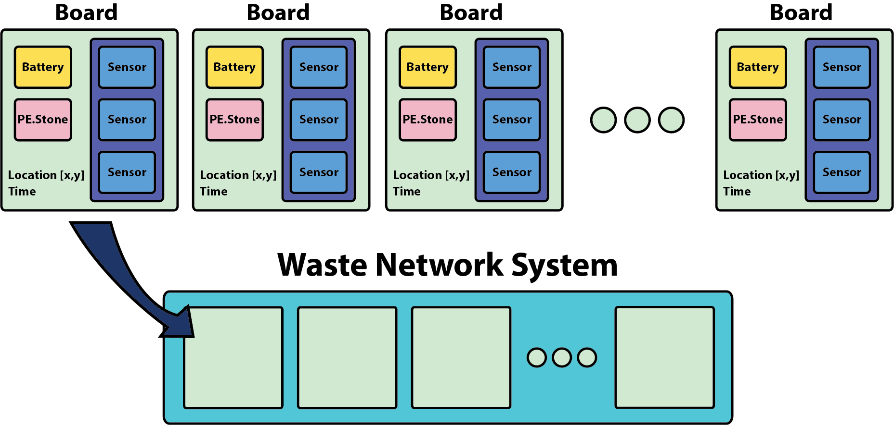
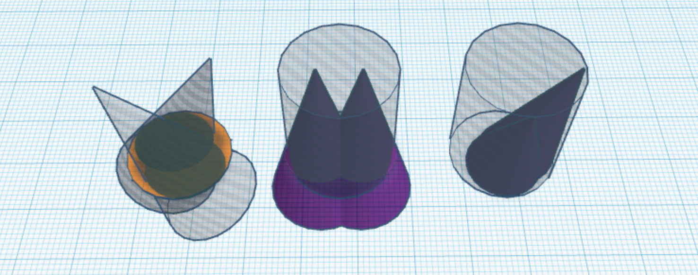

Week 1
Monday May 22, 2017
In the morning, we met Dominic LiMandri from the San Leandro Downtown Association. He works alongside the city to make public spaces more inviting to businesses and the community. Dom's main role in our project is to speed up any of the civil bureaucratic processes. Our meeting was very casual and the discussion ranged from weighing the impact of our project on the community to laughing about the activities to do in San Leandro. Our end goal for the meeting was to clarify the problem that we are tackling. We covered a lot of the logistics and technical aspects about the project, but we learned that there are many facets of the city's maintenance that can be improved. We were surprised to find out that there are only four maintenance workers, three on some days, for the entire downtown area. They sweep, collect, and pressure wash the dirt and trash on the streets and sidewalks every day. Especially because additional trash cans will be introduced to the downtown area, our project's intention is to reduce much of the labor required for maintenance. By implementing sensors, workers will only need to expend their energy on trash cans that actually need to be serviced, instead of checking all exisitng cans.
Logistics: Meeting with Dominic
- Start off with 10 units, then add more (about 40 total) if budget permits
- $500 max per unit, but aim for less
- Trash cans bolted into ground
- Stainless steel outer body, separate plastic can inside
- Contract with ACI: they buy the trash cans for us
- Should be as easy to replace as previous trashcans
- Able to withstand daily beating of a regular trashcan
- Ideally, battery lasts over a month and should be easy maintenance
- Securely fixed to trash can to avoid robberies
After lunch, we did an inventory check of all of our hardware and made note of what else we needed. At PhaseSpace, we met some people who could help provide any of the tools that were necessary. We spent the rest of the day discussing the pricing on a software development kit from Paradox that could potentially cut down our development time from a month down to a week. The team will be meeting them on Wednesday. We obtained calibration data and studied the data sheets from the sensors we might use in order to weigh the pros and cons of using each. We then met with James, one of the PhaseSpace employees with extensive technical experience. He gave us technical advice on how to move forward with the project.
Sensor Pros and Cons
| Sensor |
Pros |
Cons |
| Force Sensitive Resistor (FSR) "Square" |
- Use voltage divider to control sensitivity and voltage swing
- Very light
- Low power
|
- Easily damaged
- Requires contact with trashbag
|
| FSR "Strip" |
- Very long
- Use voltage divider to control sensitivity and voltage swing
- Very light
- Low power requirement
|
- Easily damaged
- Requires contact with trashbag
|
| Ultrasonic Transmitter and Receiver" |
- No contact with trash
- Compact size
|
- Inaccurate
- Large voltage required
- Short range (around 1 ft)
- AC voltage required
|
Technical Advice: Meeting with James
- 4 weeks (propositioned) to roll out a fully functional prototype is short
- Add a beep when the trash is changed
- Choose integrated circuits over replcating them
- Consider the size of the trash can
- Debate between plastic or metal housing
- Finalize the power supply ahead of time e.g. take price of battery into account
- Manufacturing takes 3-4 weeks after final prototype is completed
Tuesday May 23, 2017
We met Mayor Pauline Cutter and Council Member Pete Ballew and we discussed some projects that might be interesting if we complete the smart trash project following our tentative schedule.
The Next Projects: Meeting with the Mayor
Startups In Residence (STIR) Program
- Connects startups with government entities to solve problems
- Cities involved are: San Francisco, Oakland, San Leandro, Sacramento
- Bot that recommends activities for people who want to learn more about the city
We should look into the following 3 projects:
- How to connect people to San Leandro government
"More events" seems to be the only answer
- Lighting in San Leandro (we will probably do this next)
- Improve Transportation
- AC Transit is not meeting needs
- Kaiser Shuttle
- Bicycle/Pedestrian Program ties-in with transportation
We tested the ultrasonic sensors with the integrated circuits and they are fully functional, but we will need to develop a waterproofing system to make it more robust. We are thinking that multiple ultrasonic sensors for different sections of the trash can seems to be a viable solution. We looked into different types of ultrasonic sensors (e.g. distance sensors for cars) to look for the ideal sensor for our application.
On the software side, we set up a layout for the different parts of our board and network. This includes creating classes for each of the components. We also discussed the importance of the Paradox SDK in our project as it could cut down a lot of the time we could spend refining other aspects. However, we are concerned at the cost of the SDK as it would swallow a huge amount of our budget.

Wednesday May 24, 2017
The team met with Paradox, Climatec, and San Leandro's IT Department at the city hall in order to discuss the implementation of the smart waste. We also learned a lot about the implementation of the new lights throughout the city and the nodes and gateways that they communicate with.
During the meeting we received a detailed description on the implementation of the new smart lighting. The lights are connected together as nodes that dynamically mesh together for the best signals. These nodes will then connect to a gateway that connects to the gigabit fiber in the city. The gateways will also connect together. The system of these connecting nodes and gateways will be taken into account when trying to implement our smart waste devices with the city's 6LoWPAN.
Next Steps:
- Decide on the degree of integration with Paradox's software that our devices will need.
- Develop sensor prototype which can be quickly integrated with Paradox hardware once that is received.
- Decide on testing for case study.
- Keep in contact with Paradox regarding the use of their development kit.
- Work on implementing OSI's PI Ssystem with data from our sensors.
- Determine/Finalize the liscensing of our product.
We also prepared for the launch party and now have a better sense of the connections between our partners.
Thursday June 25, 2017
We looked deeper into our ultrasonic sensor design today. Experimentally, we documented the HC-SR04 ultrasonic sensor measurements for different heights of trash. In testing, we realized that the cone response of the ultrasonic sensor could touch the side walls of the trash can and read a false response. We also found that one or two sensors has much dead space that the sensor does not cover.
To optimize the location of sensors to cover the most area of the trash can we wrote up the following problem statement.
Parameters
- Diameter and height of trash can
- Use of 2 ultrasonic distance sensors (4 if necessary)
- 30 degree scanning range of each sensor (15 degree half angle, cone shaped)
- Position of each sensor on trash can lid - avoiding 1 ft diameter hole in the center
- Each sensor measures the surface that is the closest distance to it
We want to measure the fill level of trash in a trash can. Ultrasonic distance sensors are installed facing down into the trash can at a variable angle. The trash fill level is determined by the shortest distance the sensors read. The sensors have a +/-15 degree range and reach up to 4 meters. Our primary goal is to measure the fill level in the trash can as it fills up over time. To do this, we want to maximize the area the sensors cover without reading false distances from the walls of the trash can.
We made rough models for possible configurations of the sensors.


Friday May 26, 2017
As preliminary testing of the different sensors wrapped up, the team began to consider the pros and cons of attaching one sensor vs. two sensors on each trash can.
| Number of sensors |
Pros |
Cons |
| 1 sensor |
- Less battery usage
- Easier circuit
- Less processing required
- Smaller unit
- Cheaper
|
- No way to cross-check
- Less region of the trash can covered
|
| 2 sensors |
- More region of the trash can covered
- Heightened IP value due to predictive software capabilities
- Cross-checking possible
|
- More battery usage
- More complicated code
- Multiple housing units needed
- More math involved
- Echoes
|
| 3 sensors |
- Can estimate a plane with three points
- Heightens IP value
- Easy Installation with sensors pointed down
|
|
From the pros and cons discussed, we plan to have one sensor per unit. Although having two sensors instead of one sensor heightens our capability to monitor a larger region of the can, there appear to be less cons involved if using one sensor. Since trash naturally accumulates towards the center, and our primary goal is to detect when the cans need to be emptied, one sensor is sufficient for our purposes.